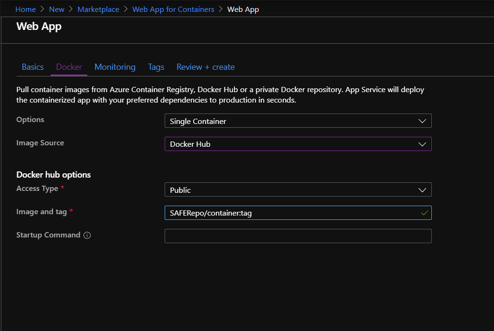
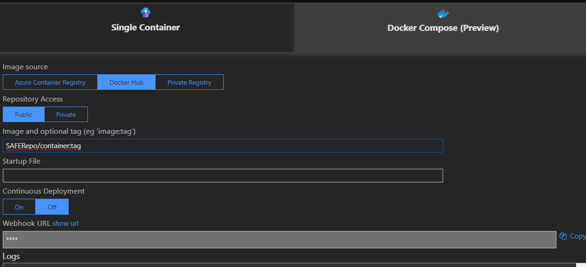

Deploy to Docker
The SAFE template has the ability to easily create a Docker container. The details of the additions to the FAKE script are shown here. For this deployment option SAFE uses the Linux containers and therefore you need docker installed on your machine and configure it to run with Linux containers.
Custom FAKE build tasks
- Bundle - all necessary artifacts for both Server and Client are collected for following
Dockertarget. - Docker - based on present
Dockerfile, docker image is built and tagged usingdockerUseranddockerImageNamevalues from the script.
Note: Before running the
Dockertarget, make sure to modify the defaultdockerUseranddockerImageNamevalues in script.
Testing docker image locally
- Make sure you have docker installed and created the template with
--deploy dockeroption - Run
fake build --target docker - Run
docker run -d -it -p 8085:8085 {dockerUser}/{dockerImageName} - Navigate to
{dockerHost}:8085url
Docker image
The image is based on microsoft/dotnet:runtime.
Entrypoint for the image is dotnet Server.dll (with /Server working directory).
To allow incoming traffic, port 8085 is exposed.
Release to Azure App Service
The following part shows how to set up automatic deployment to Microsoft Azure.
Currently, SAFE template doesn't contain additional FAKE build targets to deploy a Docker image directly to Azure, so you'll need to grab (and possibly adjust) additional FAKE "Deploy" target from SAFE BookStore build script.
Following steps assume you've added the necessary build script fragments from SAFE BookStore.
Docker Hub
Create a new Docker Hub account and a new public repository on Docker Hub.
Release script
Create a file called release.cmd with the following content and configure your DockerHub credentials:
@echo off
cls
fake build --target Deploy "DockerLoginServer=docker.io" "DockerImageName=****" "DockerUser=****" "DockerPassword=***" %*
Don't worry the file is already in .gitignore so your password will not be commited.
Initial docker push
In order to release a container you need to create a new entry in [RELEASE_NOTES.md] and run release.cmd.
This will build the server and client, run all test, put the app into a docker container and push it to your docker hub repo.
Azure Portal
Go to the Azure Portal and create a new "Web App for Containers". Configure the Web App to point to the docker public repository and type in an image and tag.

Also look for the "Webhook Url" on the portal (It is available in Settings/Container Settings of your deployed app), copy that url and set it as new trigger in your Docker Hub repo.

Note that startup command is not necessary.
The Dockerfile used to create the docker image exposes port 8085 for the Giraffe server application. This port needs to be mapped to port 80 within the Azure App Service for the application to receive http traffic.
Presently this can only be done using the Azure CLI. You can do this easily in Azure Cloud Shell (accessible from the Azure Portal in the top menu bar) using the following command:
az webapp config appsettings set --resource-group <resource group name> --name <web app name> --settings WEBSITES_PORT=8085
The above command is effectively the same as running docker run -p 80:8085 <image name>.
Now you should be able to reach the website on your yourapp.azurewebsites.net url.
Further releases
Now everything is set up. By creating new entries in [RELEASE_NOTES.md] and a new run of release.cmd the website should update automatically.
Alternatively, you can use the ARM deploy option to do automatic deployment to the Azure App Service platform.